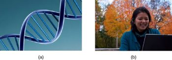
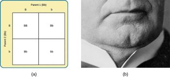

9.2: Fundamental Genetics and Genetic Variation
Genetic variation, the genetic difference between individuals, contributes to a species’ adaptation to its environment (Spielman et al., 2020). In humans, genetic variation begins with an egg, about 100 million sperm, and fertilization. Roughly once per month, active ovaries release an egg from follicles. During the egg’s journey from the ovary through the fallopian tubes to the uterus, a sperm may fertilize the egg.
The egg and the sperm each contain 23 chromosomes. Chromosomes are long strings of deoxyribonucleic acid (DNA). DNA is a helix-shaped molecule made up of nucleotide base pairs. In each chromosome, sequences of DNA make up genes that control or partially control a number of visible characteristics, known as traits, such as eye color, hair color, and so on. A single gene may have multiple possible variations or alleles. So, a given gene may code for the trait of hair color, and the different alleles of that gene affect which hair color an individual has.
When a sperm and egg fuse, each of their 23 chromosomes combine to create a zygote with 46 chromosomes (23 pairs). Therefore, each parent contributes half the genetic information carried by the offspring; the resulting physical characteristics of the offspring (called the phenotype) are determined by the interaction of genetic material supplied by the sperm and egg (called the genotype). A person’s genotype is the genetic makeup of that individual. Phenotype, on the other hand, refers to the individual’s inherited physical characteristics, which are a combination of genetic and environmental influences (Figure 3).

Most traits are controlled by multiple genes, but some, like cleft chin, are influenced by a single gene from each parent. Let’s call the gene for cleft chin “B” and for smooth chin “b.” Cleft chin is dominant, meaning having the dominant allele from one (Bb) or both (BB) parents results in a cleft chin. Individuals with two copies of the same allele are homozygous, while those with different alleles are heterozygous. Smooth chin is a recessive trait, requiring two recessive alleles (bb) to appear.
When a person with a cleft chin mates with someone with a smooth chin, the offspring’s chin type depends on the parents’ alleles. If the cleft-chinned parent is homozygous (BB), offspring will always have a cleft chin. If the cleft-chinned parent is heterozygous (Bb), the offspring will have a 50% chance of cleft chin (Bb) and 50% chance of smooth chin (bb) because the smooth-chinned parent (bb) will always contribute the recessive allele (bb) (Figure 4).

In sickle cell anemia, heterozygous carriers (like Luwi from the example) can develop blood resistance to malaria infection while those who are homozygous (like Sena) have a potentially lethal blood disorder. Sickle-cell anemia is just one of many genetic disorders caused by the pairing of two recessive genes. For example, phenylketonuria (PKU) is a condition in which individuals lack an enzyme that normally converts harmful amino acids into harmless byproducts. If someone with this condition goes untreated, they will experience significant deficits in cognitive function, seizures, and an increased risk of various psychiatric disorders. Because PKU is a recessive trait, each parent must have at least one copy of the recessive allele in order to produce a child with the condition.
So far, we have discussed traits that involve just one gene, but few human characteristics are controlled by a single gene. Most traits are polygenic: influenced by more than one gene. Examples of polygenic traits include height, skin color, weight, intelligence, schizophrenia, cancer, heart disease, and diabetes.
Harmful genes, like those causing PKU, often arise from mutations—sudden, permanent changes in genes. While many mutations are harmful or lethal, some can be beneficial, giving individuals advantages over others. This genetic variability is crucial for evolution, as it provides variability in traits that allow for adaptability to environmental changes. If a population consisted of identical individuals, then any dramatic environmental changes would affect everyone the same, and there would be no variation in selection. Instead, diversity in genes and associated traits allows some individuals to better survive and reproduce, passing their genes to future generations. This process underlies the theory of evolution, where those best adapted to their environments are more likely to reproduce and transmit their genes.
DIG DEEPER
Human Diversity
This chapter focuses on biology. Other areas of psychology, such as social psychology, study issues of race, prejudice, and discrimination. When we focus strictly on biology, race becomes a weak construct. After the human genome was completely sequenced at the turn of the 21st century, many scientists began to argue that race was not a useful variable in genetic research and that its continued use represents a potential source of confusion and harm. The racial categories that some believed to be helpful in studying genetic diversity in humans are largely irrelevant. A person’s skin tone, eye color, and hair texture are functions of their genetic makeup, but there is actually more genetic variation within a given racial category than there is between racial categories. In some cases, focus on race has led to difficulties with misdiagnoses and/or underdiagnoses of diseases ranging from sickle cell anemia to cystic fibrosis. Some argue that we need to distinguish between ancestry and race and then focus on ancestry. This approach would facilitate a greater understanding of human genetic diversity (Yudell et al., 2016).
Text Attributions
This section contains material adapted from:
Spielman, R. M., Jenkins, W. J., & Lovett, M. D. (2020). 3.1 Human Genetics. In Psychology 2e. OpenStax. Access for free at https://openstax.org/books/psychology-2e/pages/3-1-human-genetics License: CC BY 4.0 DEED.
Media Attributions
- Genotype © Openstax is licensed under a CC BY-NC (Attribution NonCommercial) license
- Punnett vs cleft chin © Openstax is licensed under a CC BY-NC-SA (Attribution NonCommercial ShareAlike) license
a long strand of genetic information
Helix-shaped molecule made of nucleotide base pairs
A sequence of DNA that controls or partially controls physical characteristics
Specific version of a gene
Genetic makeup of an individual
The observable characteristics of an individual
Allele whose phenotype will be expressed in an individual that possesses that allele
Consisting of two identical alleles
Consisting of two different alleles
Allele whose phenotype will be expressed only if an individual is homozygous for that allele
Multiple genes affecting a given trait
Sudden, permanent change in a gene